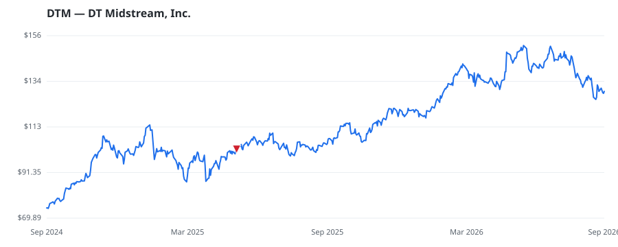

bullish · bearish · n/a — dots: price>SMA10 · SMA10>SMA50 · SMA50>SMA200 · up>down volume (20d)
Utilities · large cap

DT Midstream Inc is an owner, operator, and developer of natural gas midstream interstate and intrastate pipelines; storage and gathering systems; and compression, treatment, and surface facilities. It provides multiple, integrated natural gas services to customers through interstate pipelines, intrastate pipelines, storage systems, lateral pipelines and related treatment plants and compression and surface facilities, and gathering systems and related treatment plants and compression and surface facilities. The segments of the group are Pipeline and Gathering. It generates maximum revenue from NATURAL GAS TRANSMISSION · website
| Revenue | $1.2B | Net income | $454.0M |
|---|---|---|---|
| Operating income | $614.0M | Diluted EPS | $4.30 |
| Assets | $10.1B | Equity | $4.9B |
| Fund | Fund alpha vs SPY | Position | % of book |
|---|---|---|---|
| Merewether Investment Management, LP | +17% | $139M | 2.6% |
| SS&H Financial Advisors, Inc. | +5% | $1M | 0.2% |
Hedge data: SEC EDGAR 13F · ranked funds beat SPY in >50% of their quarters · fund alpha = mirror-portfolio return minus SPY.